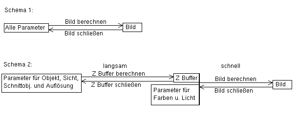

Ein Punkt in diesem Zusammenhang ist eine komplexe Zahl (im Falle eines
zweidimensionalen Fraktals). Eine komplexe Zahl besteht aus 2 voneinander
unabhängigen Komponenten, die man Real- und Imaginärteil nennt.
Ist der Imaginärteil Null, so entsprechen die komplexen Zahlen den
reellen (also z.B. 1.23324, -23, ...). Zur Kennzeichnung des Imaginärteils
dient der Buchstabe "i", wobei gilt: i*i=-1. (Hieran sieht man, daß
"i" keine reelle Zahl sein kann, denn keine reelle Zahl im Quadrat ergibt
-1.)
Eine komplexe Zahl c schreibt sich also allgemein so: c = a + i*b
Hierbei ist a der Real- und b der Imaginärteil. In zweidimensionalen
Fraktalprogrammen identifiziert man den Realteil mit der x-Koordinate auf
dem Schirm, den Imaginärteil mit der y-Koordinate.
Quat benötigt zur Berechnung seiner dreidimensionalen Fraktale Zahlen, die aus noch einer Komponente mehr bestehen, die dann mit der z-Koordinate gleichgesetzt wird. Solche Zahlen gibt es nicht, es gibt jedoch welche mit 4 Komponenten: Die Hamilton'schen Quaternionen (auch hyperkomplexe Zahlen genannt). Sie besitzen einen Realteil und 3 imaginäre Teile. Die Bezeichnungen für diese Teile lauten 1, i, j und k. "1" entspricht dem Realteil, "i" dem Imaginärteil der komplexen Zahlen. Sind also j- und k-Teil Null, so haben wir wieder die alten komplexen Zahlen. Zwischen 1, i, j und k bestehen bestimmte Rechenregeln für die Multiplikation. (Hier besteht ein Unterschied zwischen Quaternionen und hyperkomplexen Zahlen, der uns aber nicht interessieren muß. Quat verwendet Quaternionen, der Einfachheit halber werden beide Begriffe im Folgenden aber austauschbar verwendet.)
4 Komponenten würden sogar für vierdimensionale Fraktale ausreichen, aus naheliegenden praktischen Beschränkungen (s. oben) und der Beschränktheit des menschlichen Wahrnehmungsvermögens (also nicht aus Unfähigkeit des Programmierers...) kann Quat "nur" dreidimensionale Fraktale erzeugen. Die zusätzliche 4. Dimension (4. Komponente) wird auf einen konstanten Wert gesetzt, der über den Parameter 4th-dim. Intersection im "Object Editor" festgelegt wird. Diese Vorgehensweise erzeugt einen dreidimensionalen Schnitt aus einem vierdimensionalen Fraktal, analog zum zweidimensionalen Schnitt, den gewöhnliche Fraktalprogramme aus den von Quat berechneten dreidimensionalen Fraktalen machen.
Zurück zu unserer Iterationsformel. Quat benutzt u.a. eine der folgenden
Formeln:
x0 ist der Startwert ( = Punkt, der berechnet werden soll)
"n" ist ein Abzählindex, mit dem die "x" durchnumeriert werden
(n=0,1,2,3...). Der in der Formel auftretende Wert "c" ist wiederum eine
hyperkomplexe Zahl, die während der ganzen Berechnung konstant bleibt
und im Object Editor als Parameter
c
festgelegt wird. c bestimmt die Form des Fraktals.
Man stellt fest, daß die durch die Iterationsformel definierte Folge der xn (auch "Orbit" genannt) drei verschiedene Verhaltensweisen an den Tag legt:
Diese Formulierung ist noch nicht ganz exakt: Es besteht das praktische Problem, daß ein Computer die Iteration nicht ad infinitum ausführen kann, um zu sehen, ob die Folge sich einpendelt oder nicht. (Das liegt an der Beschränktheit der menschlichen Lebensdauer, wiederum nicht an der Unfähigkeit des Programmierers :-) ). Deshalb wird nach einer gewissen Anzahl von Iterationen abgebrochen. Die maximale Zahl von Iterationen wird im Object Editor durch den Parameter Max. Iteration festgelegt (im Folgenden auch einfach maxiter genannt).
Wie wird nach Ablauf dieser maxiter Iterationen nun festgelegt, ob die Folge gegen unendlich geht oder nicht? Dazu dient der Wert Bailout (Benennung frei nach "Fractint"). Wurde dieser Wert im Laufe der Iterationen überschritten, so wird angenommen, daß die Folge gegen unendlich geht.
Nun können wir das berechnete Objekt ganz präzise beschreiben: Es ist die Menge aller Punkte ( = Zahlen) x0, für die die durch die Iterationsformel definierte Folge der xn nach höchstens maxiter Iterationen den Wert bailout nicht überschritten hat. (Wie kompliziert doch schöne Formen mathematisch zu beschreiben sind... Andererseits: Wie schön doch Mathematik sein kann!)
Zur Beruhigung: Auch wer das alles nicht versteht oder wen's ganz einfach nicht interessiert, der kann trotzdem schöne Bilder berechnen.
Es ergeben sich so 2 verschiedene Koordinatensysteme: Einmal das "darzustellende" System (der Q-Raum), außerdem das "darstellende" Koordinatenystem (Bildebene, Monitor).
Der Q-Raum wird aufgespannt durch 3 Achsen, die im Folgenden mit 1, i und j bezeichnet werden, analog zu den Komponenten der hyperkomplexen Zahlen (der k-Teil wird auf einen konstanten Wert gesetzt, s.o.). Die 1-Achse ist also die reelle Achse ("Zahlenstrahl"), die von der 1- und i-Achse aufgespannte Ebene die komplexe Ebene, in der 2D-Fraktalprogramme ihre Fraktale berechnen.
Auf der Bildebene liegen zwei Achsen des Bildkoordinatensystems, die x- und y-Achse heißen und der horizontalen und der vertikalen Achse des Monitors entsprechen. Außerdem gibt es eine z-Achse, die senkrecht auf der Bildebene steht und so die Richtung anzeigt, in der man auf das Fraktal sieht.
Da sich die fraktalen Objekte immer um den Ursprung im Q-Raum herum ansiedeln, ist folgende Art der Konstruktion der Bildebene naheliegend. In der Initialisierungsdatei wird dazu ein Punkt im Q-Raum festgelegt, der View Point. Die Bildebene geht durch view point und steht senkrecht auf dem Ortsvektor view point (view point hat also eine doppelte Bedeutung: Aufpunkt und Normalenvektor der Bildebene). Durch view point ist so schon die z-Achse des Bildkoordinatensystems festgelegt. Im Folgenden bewegen wir uns nur noch auf der Bildebene.
Nun wird von dieser Ebene ein rechteckiger Ausschnitt genommen (= das Sichtfenster), der auf der Ebene so orientiert wird, daß 2 gegenüberliegende Seiten des Rechtecks parallel zur Projektion des Up (Orientation)-Vektors (s.u.) auf die Bildebene sind. Die Richtung dieser Projektion wird y-Richtung genannt und entspricht nachher der vertikalen Richtung auf dem Monitor. Die horizontale Richtung heißt x-Richtung und entspricht den anderen beiden Seiten des Rechtecks. Der up-Vektor definiert also, wo oben ist. Damit sind also schon die Richtungen der x- und y-Achse festgelegt.
Die Diagonalen dieses Sichtfensters schneiden sich im view point (das heißt, daß der viewpoint in der Mitte des Sichtfensters/Bildschirms liegt). Nun wird das Sichtfenster um den view point herum zentrisch gestreckt ("skaliert"), und zwar so, daß die in x-Richtung liegende Seite hinterher die Länge Length of View Plane's X-Axis hat (gemessen im Q-Raum, oft einfach lxr genannt), und das Verhältnis von x/y dem gewählten Auflösungsverhältis (siehe Image resolution im "Other Editor") entspricht (für verzerrungsfreie Darstellung). Die Basisvektoren des Sichtfensters (gewonnen aus der x- und y-Richtung) haben den Betrag 1. Nun sind wir im Prinzip fertig. Das Bildkoordinatensystem ist vollständig festgelegt.
Um alle möglichen Lagen des Bildschirmrechtecks erreichen zu können (bisher dreht sich alles um den Ursprung), wird zum Schluß die Bildebene um die bei Move angegebenen Werte in x- und y-Richtung (in ihrem eigenen Koordinatensystem) verschoben.
Man kann nun gewisse Parameter (Lichtquelle, Farbpalette, Farbformel, Phong Highlight und das Umgebungslicht) noch verändern, und aus dem ZBuffer schließlich ein fertiges Bild erzeugen, was relativ schnell geht.

Grafik 1: Verschiedene Wege zum fertigen Bild
ZBuffer eröffnen ein weites Feld an Experimentiermöglichkeiten,
man kann die beste Darstellung des Objektes durch Probieren herausfinden.
ZBuffer haben die Dateiendung "ZPN". In einem ZBuffer ist der volle
Satz an Parametern gespeichert, wie auch in jedem Bild (PNG). ZBuffer sind
ganz normale PNG-Dateien, sie enthalten bloß kein Bild. Manche Grafikprogramme
erkennen sie sogar und zeigen sie problemlos an, wenn man sie öffnet,
andere machen es notwendig, die Endung in PNG umzubenennen. Ob das direkte
Anzeigen allerdings einen Sinn hat, weiß ich nicht, da man mit den
in den Dateien gespeicherten Daten in der Regel wenig anfängt.